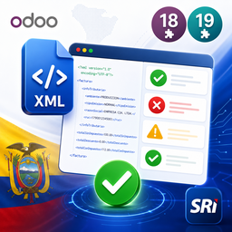

Valida el Anexo Transaccional Simplificado del SRI Ecuador directamente desde Odoo — errores XSD, reglas de negocio, advertencias y talón resumen HTML en una sola pantalla.
Odoo 19.0 · SRI Ecuador · ATS / DIMM · LGPL-3
|
Subida de XML Adjunta cualquier XML del ATS directamente desde el formulario de Odoo. |
Validación XSD Detecta errores de estructura contra el esquema oficial at.xsd del SRI.
|
Reglas de negocio Aplica las mismas validaciones del DIMM: códigos, porcentajes, RUCs y más. |
|
Advertencias Muestra avisos que no bloquean la validez pero conviene revisar antes de presentar. |
Talón resumen HTML Renderiza el talón oficial del SRI directamente en Odoo cuando el XML es válido. |
Historial Guarda cada validación con secuencia automática ATS/YYYY/NNNN.
|
|
URL configurable Viene lista para usar contra el servicio público; cámbiala desde Ajustes si autohospedas el tuyo. |
Permisos integrados Acceso controlado por los roles contables estándar de Odoo. |
| Odoo | 19.0 |
| Python | 3.10 o superior |
| Java (solo si autohospedas) | JDK 11, 17 o 21 |
| Módulos Odoo | account, mail |
El motor de validación es el microservicio ats-validator. El módulo viene preconfigurado para usar el servicio público ya desplegado — no necesitas instalar nada adicional:
# URL por defecto, lista para usar https://validator.ats.erp360app.com
¿Prefieres autohospedarlo? Es un JAR de Spring Boot autocontenido (~29 MB) que incluye los catálogos del SRI. Solo necesita Java instalado:
# Levantar el servicio (puerto 8080 por defecto) java -jar ats-validator-1.0.0.jar
| Subir XML | → | Validar XML | → | Servicio REST | → | Resultados en Odoo |
| Sección | Estado | Descripción |
|---|---|---|
| Estado del registro | Válido | El XML pasa XSD y todas las reglas de negocio del SRI. |
| Estado del registro | Inválido | Hay errores que impiden la presentación al SRI. |
| Errores XSD | Bloqueante | El XML no cumple la estructura del esquema oficial at.xsd. |
| Errores de negocio | Bloqueante | Datos inválidos según las reglas del DIMM (códigos, porcentajes, RUCs). |
| Advertencias | Informativo | Avisos que no bloquean la validez. Conviene revisarlos. |
| Talón resumen HTML | Solo si es válido | Talón oficial del SRI renderizado directamente en Odoo. |
|
N
Nelio Ciguencia
GitHub: @nelio2120 · Email: neliomarcos040@gmail.com ¿Dudas, bugs o mejoras? Abre un issue en el repositorio o escríbeme directamente. |